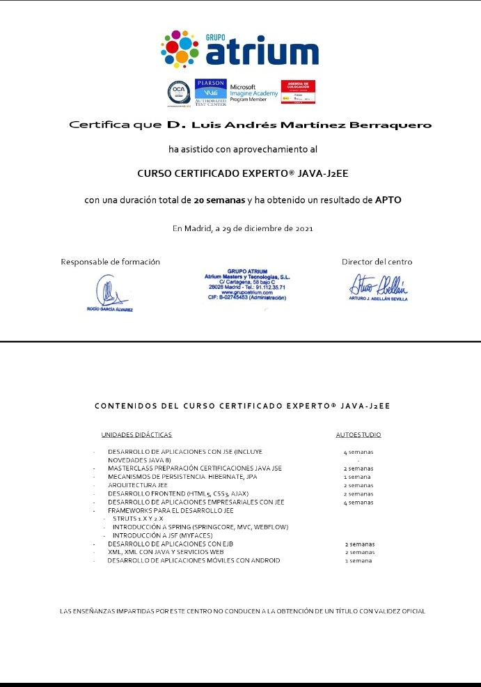
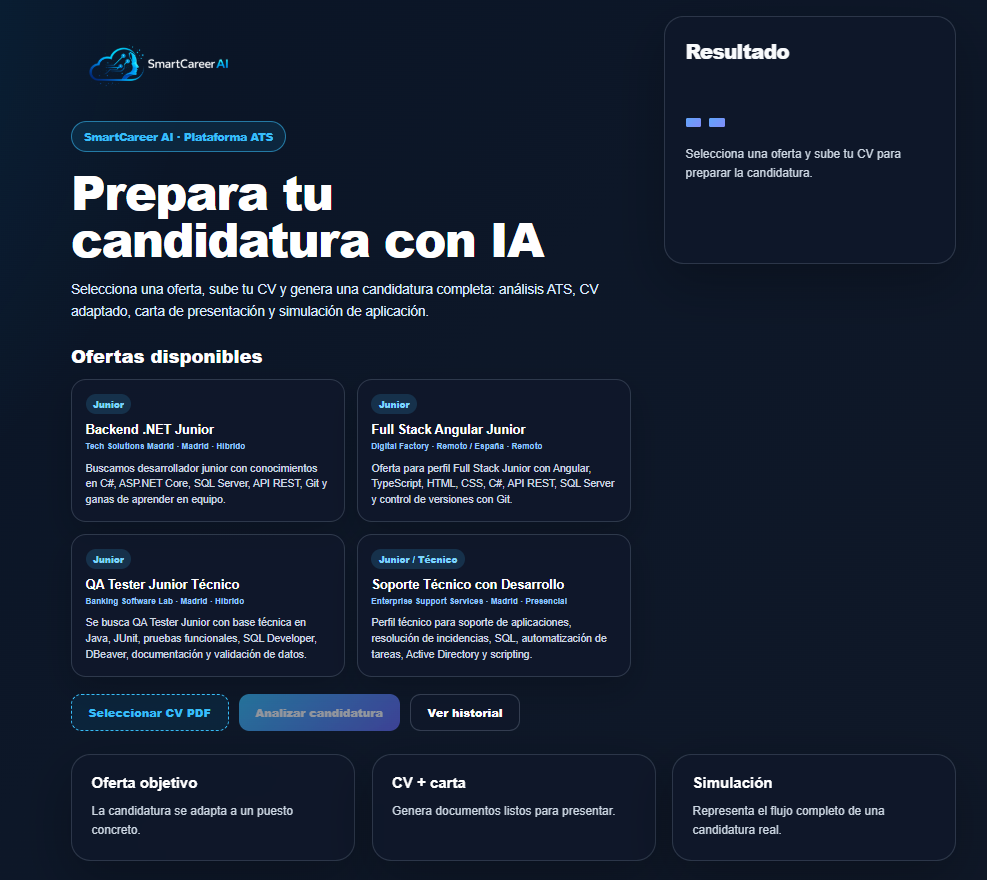
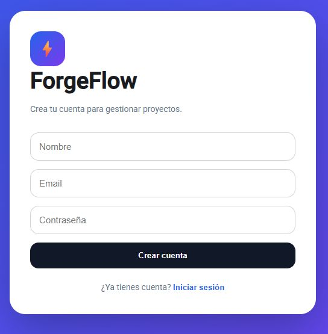
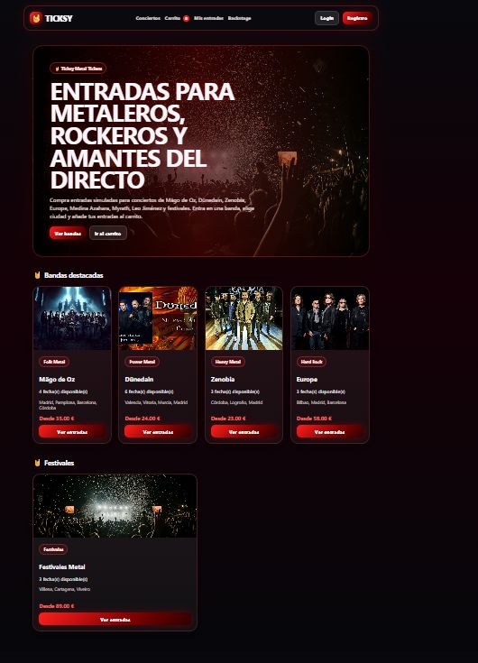
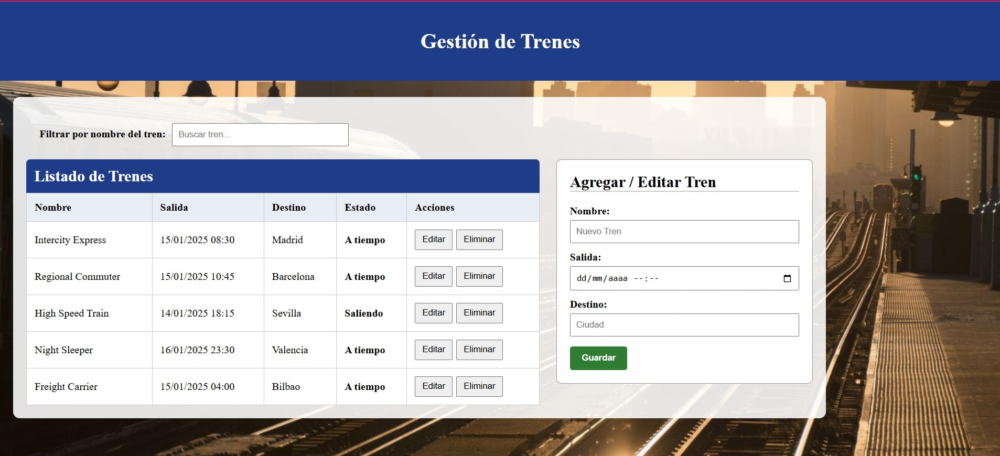
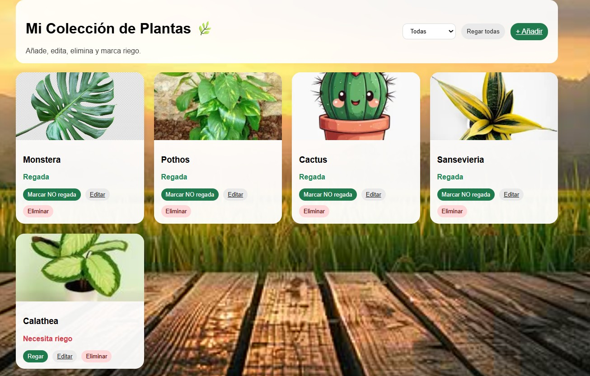
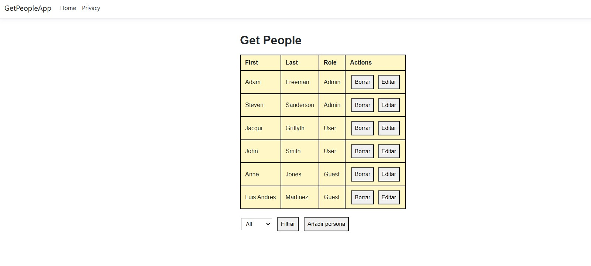
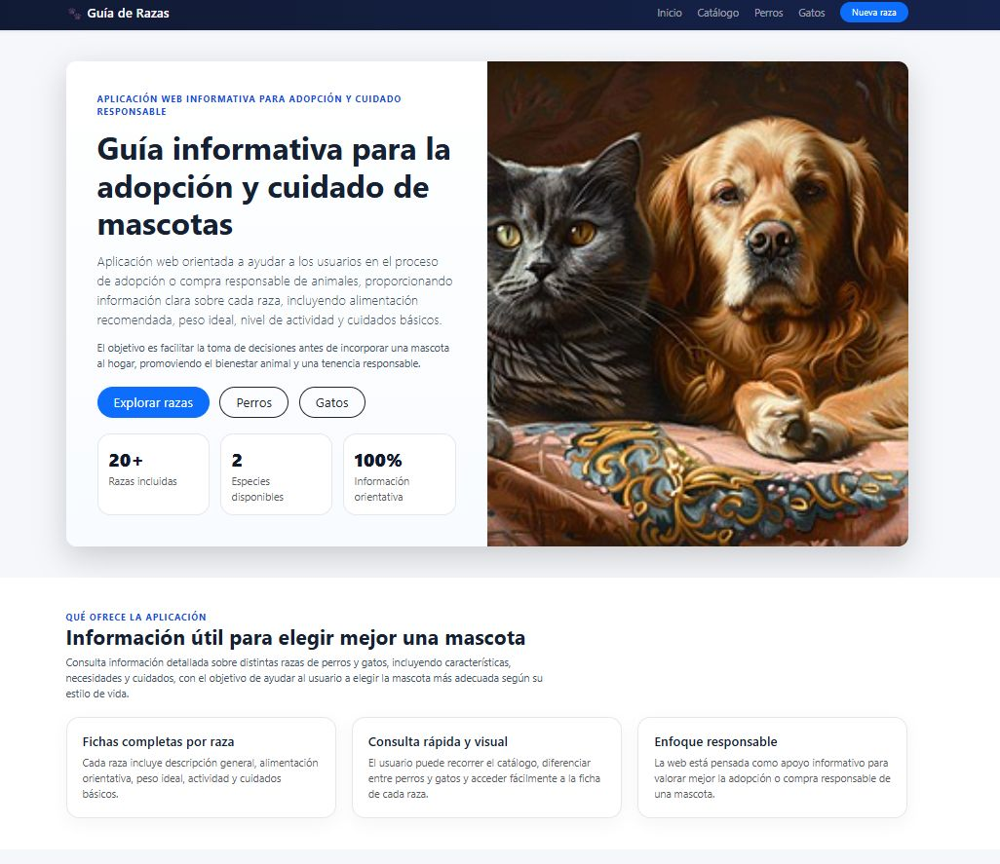

Desarrollo Full Stack
Construyo aplicaciones web con .NET, Java, Spring Boot, Angular y React, conectando interfaces, APIs, lógica de negocio y persistencia.
Desarrollador Full Stack · Sistemas y Soporte IT
Mi carrera profesional comenzó en el área de sistemas, donde aprendí la importancia de la estabilidad, la seguridad y la resolución de problemas. Con el tiempo descubrí que mi verdadera vocación era el desarrollo de software, por lo que fui ampliando mis conocimientos en programación y participando en proyectos con C#, .NET, Java, Python, Groovy y tecnologías web. Hoy combino esa experiencia técnica con mi formación en Desarrollo de Aplicaciones Web para crear aplicaciones útiles, mantenibles y enfocadas a las necesidades reales de las personas. Busco incorporarme a un equipo donde pueda seguir creciendo como desarrollador y aportar valor desde el primer día.
02 / MI ENFOQUE
Mi experiencia combina programación, soporte y sistemas. Esto me permite comprender una solución completa: desde el usuario y la infraestructura hasta la lógica, los datos y el despliegue.
Construyo aplicaciones web con .NET, Java, Spring Boot, Angular y React, conectando interfaces, APIs, lógica de negocio y persistencia.
Experiencia en soporte remoto e in situ, Windows, Linux, Active Directory, virtualización, hardware y resolución de incidencias corporativas.
Trabajo con SQL Server, PostgreSQL y Oracle, consultas, procedimientos, operaciones CRUD, ORM e integración mediante APIs REST.
Utilizo IA como apoyo para analizar requisitos, revisar código, documentar soluciones, generar pruebas y acelerar tareas sin sustituir el criterio técnico.
03 / CONOCIMIENTOS
Tecnologías utilizadas en experiencia profesional, formación y proyectos personales. Las presento por áreas, sin porcentajes artificiales ni niveles inventados.
FORMA DE TRABAJO
02 / FORMACIÓN
Titulaciones oficiales orientadas a sistemas, administración de infraestructuras y desarrollo de aplicaciones. Pulsa sobre cada imagen para verla a tamaño completo.
Finalizado en 2016
Formación en sistemas, redes, virtualización, servidores, seguridad y soporte técnico.
Finalizado en 2018
Formación en programación, bases de datos, interfaces, servicios y desarrollo de software.

Ampliar certificado ↗Finalizado en 2021 · 20 semanas
Especialización privada en Java SE y Java EE, persistencia con Hibernate/JPA, Spring, servicios web, JSP, JSF, XML, HTML5, CSS3 y AJAX.
En curso · Pendiente de prácticas
Formación académica completada. Pendiente de realizar las prácticas obligatorias para obtener el título oficial.
03 / CURSOS Y ACREDITACIONES
Las titulaciones oficiales aparecen en la sección anterior. Aquí muestro cursos completados y acreditaciones privadas como apoyo a mi aprendizaje continuo.
04 / OBJETIVO PROFESIONAL
Estoy orientando mi experiencia en sistemas y soporte hacia el desarrollo de software, reforzándola con proyectos completos, documentación y despliegues reales.
04 / PROYECTOS
Una selección de aplicaciones desarrolladas con Angular, React, .NET, Python y diferentes tecnologías. Cada proyecto representa una oportunidad para aprender, resolver problemas y mejorar la calidad de mi código.

FULL STACK · ANGULAR · .NET
Plataforma Full Stack creada para analizar currículums, identificar puntos de mejora y generar recomendaciones profesionales e informes ATS.

ANGULAR · GESTIÓN DE PROYECTOS
Plataforma de gestión de proyectos con autenticación simulada, dashboard, operaciones CRUD y tablero Kanban interactivo con funcionalidad de arrastrar y soltar.

REACT · EXPERIENCIA DE USUARIO
Aplicación web que recrea una plataforma de venta de entradas para conciertos de metal, rock y festivales, con una interfaz centrada en la navegación y la experiencia del usuario.

ANGULAR · GESTIÓN
Aplicación desarrollada con Angular para administrar trenes, rutas y horarios mediante una estructura modular basada en componentes reutilizables.

ANGULAR · SIMULACIÓN
Aplicación interactiva centrada en el cuidado y evolución de plantas virtuales, creada para trabajar estados, componentes y lógica de interacción.

WEB APP · CRUD
Aplicación orientada a la gestión de personas, creada para practicar operaciones CRUD, organización de componentes y mantenimiento de información.

PYTHON · GESTIÓN DE DATOS
Aplicación de inventario desarrollada para trabajar lógica de negocio, persistencia, validación de datos y operaciones de gestión.

WEB APP · ANIMALES
Aplicación web dedicada a consultar y presentar información sobre animales y sus razas mediante una interfaz visual, organizada y adaptable.
05 / EXPERIENCIA
Proyectos MAPAMA, Madrid SER, ACS y Smart Lockers. Desarrollo con C#, .NET MVC, Python, PostgreSQL y VBA; automatización, pruebas, soporte de software y documentación técnica.
Aplicación MS Access con VBA, operaciones CRUD, Java y resolución de incidencias de aplicación.
Pruebas unitarias y funcionales con JUnit y JPA, Java 8, SQL Developer, DBeaver, Linux, Remedy y pequeñas aplicaciones internas.
Desarrollo de aplicaciones Velneo, formación específica y soporte informático a trabajadores y comerciales.
OpenIAM, Groovy, scripts, reconciliaciones, Linux, API, DBeaver, SQL Developer y PL/SQL.
HTML, CSS, JavaScript, Visual Nácar, Unix, Remedy, SCP, XCom y despliegues entre entornos.
VBA, Excel, PL/SQL, SQL Developer, procedimientos almacenados, tablas y consultas.
Soporte remoto e in situ, Active Directory, Exchange, virtualización, Windows Server, Acronis y gestión de incidencias.
Soporte técnico, Outlook, Acronis, VMware Workstation, Windows Server y resolución de incidencias.
06 / CONTACTO
Disponible para prácticas remuneradas de DAW y posiciones junior .NET, Angular o Full Stack en Madrid, formato híbrido o remoto.